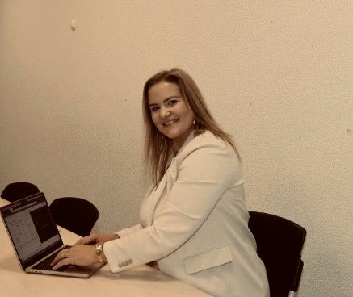

Ma formation commence par l'économie, avec un bachelor universitaire en sciences économiques orienté management. C'est en cherchant à comprendre ce que les modèles économiques laissaient de côté que je me tourne vers la sociologie, jusqu'au doctorat en sciences humaines et sociales, consacré aux solidarités associatives face aux insuffisances de l'État social et aux mutations du lien social. Cette double formation m'a laissé deux langues : celle des organisations – gestion, finances, stratégie, logiques de marché – et celle des sciences humaines et sociales.
Mon parcours professionnel s'est construit dans le milieu académique suisse, entre universités et hautes écoles, où j'évolue depuis 2009. Je suis entrée dans la recherche par un premier mandat sur les technologies de l'information et de la communication dans les migrations, à l'Université de Neuchâtel ; j'y ai ensuite mené l'assistanat doctoral et de nombreux mandats de recherche appliquée dans des domaines très divers, pour des mandants publics et associatifs. C'est dans ce cadre que j'ai réalisé ma thèse de doctorat, soutenue en 2018 (mention summa cum laude) – en parallèle de ces mandats, de la direction de travaux de bachelor à la Haute école de travail social de Genève et de divers enseignements. J'ai géré un projet du Fonds national suisse au CHUV, puis passé six années à la Haute école de santé de Fribourg, entre coordination de projets de recherche, enquêtes de terrain et enseignement ; j'y ai notamment copiloté la mise sur pied d'une ligne d'écoute et de soutien pour les proches aidant·e·s, dans le cadre d'un mandat de l'État de Fribourg, et assuré en parallèle le secrétariat général de l'association Proches Aidants Fribourg. J'enseigne les méthodes de recherche depuis 2010 – à l'université comme en haute école et auprès de corps enseignants – et depuis 2015 comme chargée d'enseignement à l'Université de Neuchâtel.
L'intelligence artificielle s'inscrit dans ce fil plutôt qu'elle ne le rompt : les technologies de l'information et de la communication sont l'objet par lequel j'ai commencé ma carrière académique. L'arrivée des grands modèles de langage a ravivé cette question ; je m'y suis formée de façon intensive et autonome, puis j'en ai fait un axe de travail à part entière – formations et conférences auprès d'institutions publiques, de PME et d'entreprises, d'associations et d'administrations communales, partout en Suisse romande, ainsi que des interventions dans des brevets fédéraux et d'autres parcours certifiants, sur l'IA comme sur l'innovation. Cet axe se nourrit d'une veille et d'une expérimentation constantes : je me forme en continu et je mets les outils à l'épreuve de cas concrets, au rythme de leurs évolutions. Je suis par ailleurs associée à un réseau d'acteur·trice·s qui contribue activement au développement et à la diffusion de l'IA en Suisse, et singulièrement en Suisse romande.
Depuis 2026, je conduis l'ensemble de ces activités à mon compte : mandats de recherche, d'évaluation et d'étude d'impact pour des collectivités et des organisations publiques et privées, collaboration scientifique à l'Université de Neuchâtel, formations, conférences et accompagnement de professionnel·le·s. Depuis fin 2024, j'ai formé plus de 1 300 professionnel·le·s ; depuis 2010, j'ai accompagné plus de 800 étudiant·e·s.
Ce parcours a forgé une conviction : la recherche appliquée et la formation se renforcent mutuellement. C'est la recherche qui donne à mes formations leur substance – la rigueur des méthodes, la capacité à saisir les enjeux d'une situation et à en poser le diagnostic, le maintien de l'esprit critique face aux promesses comme aux craintes qui entourent ces technologies. Cette exigence se double d'une compétence andragogique certifiée : formatrice d'adultes titulaire du certificat FSEA, je prépare actuellement le brevet fédéral de formatrice d'adultes. Former des adultes est un métier ; l'andragogie qui est la mienne part de l'expérience des personnes, se concentre sur le processus d'apprentissage et vise leur autonomie comme leur montée en compétences. Et ce sont mes interventions et mes actions sur le terrain qui, en retour, nourrissent mes questions de recherche.
La recherche donne aux formations leur substance ; les problématiques et les besoins du terrain la nourrissent en retour.